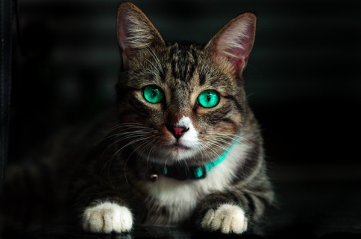

Anna Kozik
Strona dla zwierząt domowych.
Los zwierząt od zawsze był mi bliski. Zwierzaki towarzyszyły mi od dzieciństwa- zaczynając od rybek, poprzez świnki morskie na większych zwierzakach kończąc.
Kochane zwierzaki
Jak nie kochać wpatrzonych w człowieka oczu dla których jest się całym światem?
Moje futrzaki
Psiaki zostały w domu rodzinnym
Aros i Pola musiały zostać z moimi rodzicami
Niestety mój obecny styl życia nie pozwala na opiekę nad szczekającym czworonogiem
Na szczęście mam możliwość ugoszczenia u siebie kociaków
Dlatego w moim mieszkanku pojawiły się dwa miauczące stworzonka:
- Maciek
- Tosia
Moje kociaki
Obecnie w moim domu króluje Tosia
Przygarnięta jak maleńki czarny kociak, dziś już dumna pani na włościach pełna klasy i szyku
Przed Tosią był Maciek
Cudowny pieszczoch i okropny łasuch, chętny zjeść wszystko co choć trochę pachniało mięsem
Prozwierzęce fundacje
"Domowe" fundacje:
Osobiście sprawdzona, z mojego miasta rodzinnego . Koty z "Kociej".
Duże fundacje:
Krakowskie Towarzystwo opieki nad zwięrzętami
Pomoc porzuconym psom i kotom, ale również mniej oczywistym jak świnki morskie, króliki, papugi
Ich strona główna